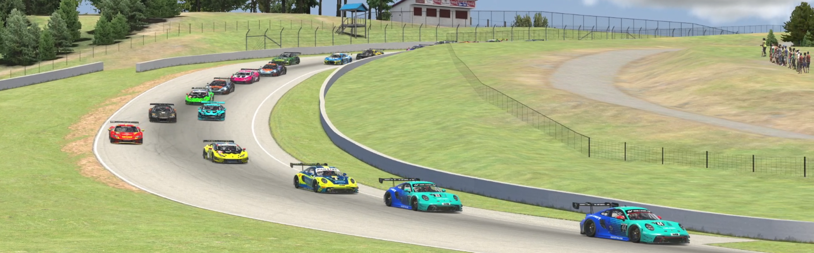

As the IMSA GT3 World Championship 2024 roars to life, drivers and teams prepare to battle it out over a packed season, with each twist and turn adding to the electrifying tension on and off the track. This year’s driver lineup is brimming with skill, ambition, and a few simmering rivalries that promise fireworks. With a balanced mix of experienced veterans and rising stars, every race will be a must-watch.
2024 GT3 World Championship
The Ultimate Racing Showdown – Rivalries, Predictions, and Season Showdowns

Welcome to the GT3 World Championship 2024
The IMSA GT3 World Championship 2024 roars to life as drivers and teams prepare to battle it out in a season packed with high-stakes races and electrifying rivalries. Featuring a balanced mix of seasoned veterans and ambitious newcomers, this season promises unforgettable moments at every turn.
Season Summary
[Season Summary Image Placeholder]
Key Rivalries to Watch
1. Gregoire Saucy (McLaren Velocity Racing) - Hailing from Switzerland, Saucy is the season’s favorite with a skill rating of 99. Known for his aggressive yet controlled style, Saucy enters this season determined to make up for a heartbreaking finish last year.
2. Marvin Kirchhofer vs. Tom Gamble (McLaren Gulf Dynamics) - Both drivers bring a solid skill set and rivalry within the team. Kirchhofer and Gamble will be fighting to secure dominance and drive McLaren Gulf Dynamics to a podium finish.
3. Markus Winkelhock (Audi Sport Castrol Racing) - Winkelhock brings experience and precision to the Audi team. With a skill rating of 79, he’s set to be a formidable challenger this season.
Race Schedule Highlights
Week 1: Canadian Tire Motorsports Park - Expect Saucy and Kirchhofer to come out strong on this challenging course, where precision is key.
Week 3: Silverstone Circuit (Endurance Race) - This 42-lap endurance test will separate the seasoned pros from the rookies. Winkelhock will aim to leverage his experience in long-distance races.
Week 7: Nurburgring GP-Strecke - A home advantage for Germany's Winkelhock, where he’ll be eager to perform in front of a home crowd.
Predictions for the Season
Driver Championship Projections - The driver championship could boil down to consistency. Saucy leads with his skill level, while Kirchhofer and Winkelhock provide fierce competition.
Team Championship - The internal McLaren rivalry will bring drama, with both Velocity Racing and Gulf Dynamics vying for the title.
Bold Prediction - A close finish is expected, with Audi Sport Castrol Racing poised to disrupt McLaren’s dominance.